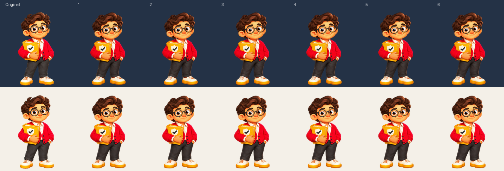

Tweede proef: subtiele ademhaling.
Vergelijk de goedgekeurde timingproef met zes nieuw getekende ademposes.
Timingproef 01
4,4 seconden per lus
Ademproef 02
4,4 seconden per lus
Schuiven pauzeert. Beide lussen duren 4,4 seconden. Links zie je de bestaande knippering, rechts de ademhaling met open ogen. Rechts is opnieuw getekend: kleine detailverschillen zijn zichtbaar. Dit is een losse proef voor beoordeling.
Originele export
Nieuwe export
Bron en zes nieuwe ademposes

Ademduur in milliseconden: 900, 700, 600, 600, 700, 900. De algemene schaal en voetenlijn blijven gelijk. Lokaal blijven kleine tekenverschillen in hoofd en schoenen zichtbaar.